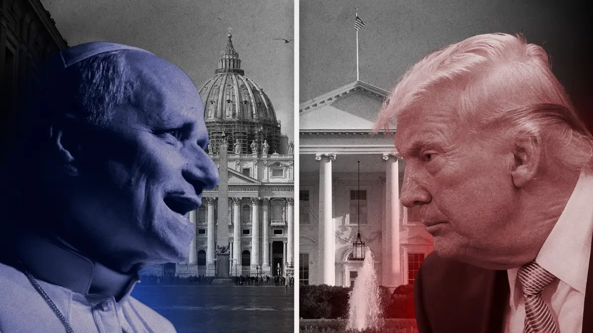

Breaking News
 April 13
April 13
by Olivia Bennett
Trump Slams Pope Leo XIV Over Crime and Foreign Policy
Donald Trump criticizes Pope Leo XIV over crime and foreign policy, intensifying tensions between political leadership and the Catholic Church
In remarks to reporters and on social media on Sunday, President Donald Trump sharply criticized Pope Leo XIV, describing the first American leader of the Catholic Church as “WEAK on crime” and "terrible for Foreign Policy." “I don’t think he’s doing a very good job." When asked about his lengthy Truth Social post Sunday night criticizing the pope, Trump responded, "He likes crime, I guess." This statement was made to reporters at Joint Base Andrews, Maryland. “We don’t like a pope that’s going to say that it’s OK to have a nuclear weapon. We don’t want a pope that says crime is OK in our cities. I don’t like it. I’m not a big fan of Pope Leo,” Trump continued. The president's comments were made shortly after he published a comparable critique online, stating, "Pope Leo is WEAK on Crime, and terrible for Foreign Policy." Trump also stated, “I don’t want a Pope who criticizes the President of the United States because I’m doing exactly what I was elected, IN A LANDSLIDE, to do.”
Why This News Matters:
This isn't just a fight with words. When Donald Trump and Pope Leo XIV argue in public, it shows that the gap between politics and moral leadership is getting bigger. Trump has been defending his policies, while the pope has been calling for peace and criticizing the war with Iran. That stress is now out in the open. This is important because both of these people have a lot of power over millions of people, so fights like this can change people's minds about more than just politics.
Pope Leo’s Criticism of War and Policy
Last week, the pope sharply criticized Trump's public threats to "wipe out" Iranian civilization, asserting that "attacks on civilian infrastructure are against international law." He also encouraged individuals to contact leaders and members of Congress to encourage peace. The world is "becoming indifferent" to violence, as Leo lamented in his Easter message and has urged Trump to end the conflict in Iran. Leo, the first American pope, has become increasingly vocal regarding the conflict between the United States and Israel in Iran. He has condemned the rhetoric and threats of President Trump directed at the Iranian populace as "truly unacceptable." On Palm Sunday, he declared, “Jesus is the king of peace, who rejects war, whom no one can use to justify war..." “He does not listen to the prayers of those who wage war but rejects them.” He also emphasized the necessity of pursuing a world devoid of nuclear weapons through dialogue and peace.
Escalating Political and Public Exchange
Trump connected the pope's ascension to his own presidency, asserting, “Leo should be thankful because, as everyone knows, he was a shocking surprise. He wasn’t on any list to be Pope, and was only put there by the Church because he was an American.” He further stated, “If I wasn’t in the White House, Leo wouldn’t be in the Vatican.” Trump also criticized Leo for meeting political figures with whom he disagrees and for condemning US actions abroad, such as operations in Venezuela. Trump posted an image shortly after his remarks, in which he is depicted as a Christ-like figure who is healing an ill person. The image is accompanied by American symbols.
Broader Context and Reactions
Trump has not consistently been disparaging of Leo. He referred to the pope's election in May as "an honor for our country." “It’s such a great honor for our country to have an American pope,” he stated at that time. According to a March poll conducted by NBC News, Pope Leo was perceived more favorably by U.S. voters than Trump. Specifically, 42% of respondents expressed positive opinions of the pope, while 8% held negative thoughts. In contrast, 41% of respondents held positive opinions of Trump, while 53% held negative opinions. Leo and other church leaders have also expressed their dissatisfaction with Trump's immigration policies. Bishops have called for reform and cautioned against a climate of fear. The Vatican did not immediately respond to a request for comment regarding Trump's most recent statements.
What to Watch Next:
Watch whether this stays a war of words—or turns into something bigger. If the pope keeps speaking out and Trump keeps responding, the divide could deepen. It’ll also be important to see how other world leaders and religious figures react, and whether this affects ongoing diplomacy around the Iran conflict.

Olivia Bennett is a U.S. political correspondent reporting on federal policy, election developments, and national governance issues.